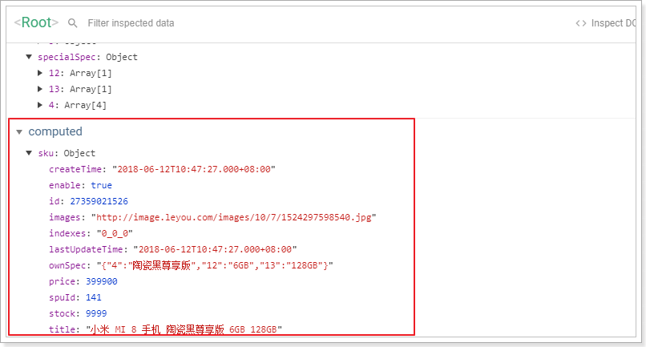
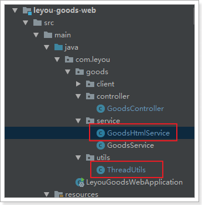

0.学习目标
- 了解Thymeleaf的基本使用
- 实现商品详情页的渲染
- 知道页面静态化的作用
- 实现页面静态化功能
1.商品详情
当用户搜索到商品，肯定会点击查看，就会进入商品详情页，接下来我们完成商品详情页的展示，商品详情页在leyou-portal中对应的页面是: item.html
但是不同的商品，到达item.html需 要展示的内容不同，该怎么做呢?
思路1:统一跳转到item.html页面，然后异步加载商品数据，渲染页面
思路2:将请求交给tomcat处理，在后天完成数据渲染，给不同商品生成不同页面后，返回给用户我们该选哪一种思路?
思路1:
优点:页面加载快，异步处理，用户体验好
- 缺点:会向后天发起多次数据请求，增加服务端压力
思路2:
优点:后台处理页面后返回，用户拿到是最终数据，不会再次向后台发起数据请求。
缺点:在后台处理页面，服务端压力过大，tomcat并发能力差
此处我们选择思路2，现在用tomcat来处理请求，完成服务端的页面渲染，不过后期我们对此进行优化。
以前服务端渲染我们都使用的JSP，不过在SpringBoot中已经不推 荐使用JJsp了，因此我们会使用另外的模板引擎技术: Thymeleaf
1.1.Thymeleaf
在商品详情页中，我们会使用到Thymeleaf来渲染页面，所以需要先了解Thymeleaf的语法。
详见课前资料中《Thymeleaf语法入门.md》
1.2.商品详情页服务
商品详情浏览量比较大，并发高，我们会独立开启一个微服务，用来展示商品详情。
1.2.1.创建module
商品的详情页服务，命名为：ly-page
1.2.2.pom依赖
1 |
|
1.2.3.编写启动类
1 |
|
1.2.4.application.yml文件
1 | server: |
1.2.5.页面模板
我们从leyou-portal中复制item.html模板到当前项目resource目录下的templates中：

1.3.页面跳转
1.3.1.修改页面跳转路径
首先我们需要修改搜索结果页的商品地址，目前所有商品的地址都是：http://www.leyou.com/item.html

我们应该跳转到对应的商品的详情页才对。
那么问题来了：商品详情页是一个SKU？还是多个SKU的集合？

通过详情页的预览，我们知道它是多个SKU的集合，即SPU。
所以，页面跳转时，我们应该携带SPU的id信息。
例如：http://www.leyou.com/item/2314123.html
这里就采用了路径占位符的方式来传递spu的id，我们打开search.html，修改其中的商品路径：

刷新页面后再看：

1.3.2.nginx反向代理
接下来，我们要把这个地址指向我们刚刚创建的服务：ly-page，其端口为8084
我们在nginx.conf中添加一段逻辑：

把以/item开头的请求，代理到我们的8084端口。
1.3.3.编写跳转controller
在ly-page中编写controller，接收请求，并跳转到商品详情页：
1 |
|
1.3.4.测试
启动ly-page，点击搜索页面商品，看是能够正常跳转：

现在看到的依然是静态的数据。我们接下来开始页面的渲染
1.4.封装模型数据
首先我们一起来分析一下，在这个页面中需要哪些数据
我们已知的条件是传递来的spu的id，我们需要根据spu的id查询到下面的数据：
- spu信息
- spu的详情
- spu下的所有sku
- 品牌
- 商品三级分类
- 商品规格参数、规格参数组
1.4.1.商品微服务提供接口
1.4.1.1.查询spu
以上所需数据中，查询spu的接口目前还没有，我们需要在商品微服务中提供这个接口：
GoodsApi
1 | /** |
GoodsController
1 | /** |
GoodsService
1 | public Spu querySpuById(Long id) { |
1.4.1.2.查询规格参数组
我们在页面展示规格时，需要按组展示：

组内有多个参数，为了方便展示。我们提供一个接口，查询规格组，同时在规格组中持有组内的所有参数。
拓展
SpecGroup类：
我们在SpecGroup中添加一个SpecParam的集合，保存该组下所有规格参数
1 | (name = "tb_spec_group") |
然后提供查询接口：
SpecificationAPI：
1 | /** |
SpecificationController
1 | /** |
SpecificationService
1 | public List<SpecGroup> queryListByCid(Long cid) { |
在service中，我们调用之前编写过的方法，查询规格组，和规格参数，然后封装返回。
1.4.2.创建FeignClient
我们在ly-page服务中，创建FeignClient：

BrandClient：
1 | ("item-service") |
CategoryClient
1 | ("item-service") |
GoodsClient:
1 | ("item-service") |
SpecificationClient：
1 | (value = "item-service") |
1.4.3.封装数据模型
我们创建一个GoodsService，在里面来封装数据模型。
这里要查询的数据：
SPU：商品
SpuDetail：商品详情
SKU集合
category：商品分类
- 这里值需要分类的id和name就够了，因此我们查询到以后自己需要封装数据
brand：品牌
spec：规格组
- 查询规格组的时候，把规格组下所有的参数也一并查出，上面提供的接口中已经实现该功能，我们直接调
sku的特有规格参数
有了规格组，为什么这里还要查询？
因为在SpuDetail中的SpecialSpec中，是以id作为规格参数id作为key，如图：
我们就需要把id和name一一对应起来，因此需要额外查询sku的特有规格参数，然后变成一个id:name的键值对格式。也就是一个Map，方便将来根据id查找！
Service代码
1 |
|
然后在controller中把数据放入model：
1 |
|
1.4.4.页面测试数据
我们在页面中先写一段JS，把模型中的数据取出观察，看是否成功：
1 | <script th:inline="javascript"> |
然后查看页面源码：

数据都成功查到了！
1.5.渲染面包屑
在商品展示页的顶部，有一个商品分类、品牌、标题的面包屑

其数据有3部分：
- 商品分类
- 商品品牌
- spu标题
我们的模型中都有，所以直接渲染即可（页面101行开始）：
1 | <div class="crumb-wrap"> |
1.6.渲染商品列表
先看下整体效果：

这个部分需要渲染的数据有5块：
- sku图片
- sku标题
- 副标题
- sku价格
- 特有规格属性列表
其中，sku 的图片、标题、价格，都必须在用户选中一个具体sku后，才能渲染。而特有规格属性列表可以在spuDetail中查询到。而副标题则是在spu中，直接可以在页面渲染
因此，我们先对特有规格属性列表进行渲染。等用户选择一个sku，再通过js对其它sku属性渲染
1.6.1.副标题
副标题是在spu中，所以我们直接通过Thymeleaf渲染：
在第146行左右：
1 | <div class="news"><span th:utext="${spu.subTitle}"></span></div> |
副标题中可能会有超链接，因此这里也用th:utext来展示，效果：

1.6.2.渲染规格属性列表
规格属性列表将来会有事件和动态效果。我们需要有js代码参与，不能使用Thymeleaf来渲染了。
因此，这里我们用vue，不过需要先把数据放到js对象中，方便vue使用
初始化数据
我们在页面的head中，定义一个js标签，然后在里面定义变量，保存与sku相关的一些数据：
1 | const specialSpec = JSON.parse(/*[[${detail.specialSpec}]]*/ ""); |
specialSpec：这是SpuDetail中唯一与Sku相关的数据
因此我们并没有保存整个spuDetail，而是只保留了这个属性，而且需要手动转为js对象。
paramMap：规格参数的id和name对，方便页面根据id获取参数名
sku：特有规格参数集合
我们来看下页面获取的数据：

通过Vue渲染
我们把刚才获得的几个变量保存在Vue实例中：

然后在页面中渲染：
1 | <div id="specification" class="summary-wrap clearfix"> |
然后刷新页面查看：

数据成功渲染了。不过我们发现所有的规格都被勾选了。这是因为现在，每一个规格都有样式：selected，我们应该只选中一个，让它的class样式为selected才对！
那么问题来了，我们该如何确定用户选择了哪一个？
1.6.3.规格属性的筛选
分析
规格参数的格式是这样的：

每一个规格项是数组中的一个元素，因此我们只要保存被选择的规格项的索引，就能判断哪个是用户选择的了！
我们需要一个对象来保存用户选择的索引，格式如下：
1 | { |
但问题是，第一次进入页面时，用户并未选择任何参数。因此索引应该有一个默认值，我们将默认值设置为0。
我们在head的script标签中，对索引对象进行初始化：

然后在vue中保存：
页面改造
我们在页面中，通过判断indexes的值来判断当前规格是否被选中，并且给规格绑定点击事件，点击规格项后，修改indexes中的对应值：
1 | <div id="specification" class="summary-wrap clearfix"> |
效果：

1.6.4.确定SKU
在我们设计sku数据的时候，就已经添加了一个字段：indexes：

这其实就是规格参数的索引组合。
而我们在页面中，用户点击选择规格后，就会把对应的索引保存起来：

因此，我们可以根据这个indexes来确定用户要选择的sku
我们在vue中定义一个计算属性，来计算与索引匹配的sku：
1 | computed: { |
在浏览器工具中查看：

1.6.5.渲染sku列表
既然已经拿到了用户选中的sku，接下来，就可以在页面渲染数据了
图片列表
商品图片是一个字符串，以,分割，页面展示比较麻烦，所以我们编写一个计算属性:images()，将图片字符串变成数组：
1 | computed: { |
页面改造：
1 | <div class="zoom"> |
完整效果
1.7.商品详情
商品详情页面如下图所示：
分成上下两部分：
- 上部：展示的是规格属性列表
- 下部：展示的是商品详情
1.7.1.属性列表（作业）
1 | <div id="one" class="tab-pane active" > |
1.7.2.商品详情
商品详情是HTML代码，我们不能使用 th:text，应该使用th:utext
在页面的第444行左右：
1 | <!--商品详情--> |
最终展示效果：

1.8.规格包装：
规格包装分成两部分：
- 规格参数
- 包装列表
而且规格参数需要按照组来显示
1.8.1.规格参数
最终的效果：
我们模型中有一个groups，跟这个数据结果很像：

分成8个组，组内都有params，里面是所有的参数。不过，这些参数都没有值！
规格参数的值分为两部分：
- 通用规格参数：保存在SpuDetail中的genericSpec中
- 特有规格参数：保存在sku的ownSpec中
我们需要把这两部分值取出来，放到groups中。

把genericSpec引入到Vue实例：

因为sku是动态的，所以我们编写一个计算属性，来进行值的组合：
1 | specGroups() { |
然后在页面渲染：
1 | <div class="Ptable"> |
1.8.2.包装列表
包装列表在商品详情中，我们一开始并没有赋值到Vue实例中，但是可以通过Thymeleaf来渲染
1 | <div class="package-list"> |
最终效果：

1.9.售后服务
售后服务也可以通过Thymeleaf进行渲染：
1 | <div id="three" class="tab-pane"> |
效果：

2.页面静态化
2.1.简介
2.1.1.问题分析
现在，我们的页面是通过Thymeleaf模板引擎渲染后返回到客户端。在后台需要大量的数据查询，而后渲染得到HTML页面。会对数据库造成压力，并且请求的响应时间过长，并发能力不高。
大家能想到什么办法来解决这个问题？
首先我们能想到的就是缓存技术，比如之前学习过的Redis。不过Redis适合数据规模比较小的情况。假如数据量比较大，例如我们的商品详情页。每个页面如果10kb，100万商品，就是10GB空间，对内存占用比较大。此时就给缓存系统带来极大压力，如果缓存崩溃，接下来倒霉的就是数据库了。
所以缓存并不是万能的，某些场景需要其它技术来解决，比如静态化。
2.1.2.什么是静态化
静态化是指把动态生成的HTML页面变为静态内容保存，以后用户的请求到来，直接访问静态页面，不再经过服务的渲染。
而静态的HTML页面可以部署在nginx中，从而大大提高并发能力，减小tomcat压力。
2.1.3.如何实现静态化
目前，静态化页面都是通过模板引擎来生成，而后保存到nginx服务器来部署。常用的模板引擎比如：
- Freemarker
- Velocity
- Thymeleaf
我们之前就使用的Thymeleaf，来渲染html返回给用户。Thymeleaf除了可以把渲染结果写入Response，也可以写到本地文件，从而实现静态化。
2.2.Thymeleaf实现静态化
2.2.1.概念
先说下Thymeleaf中的几个概念：
- Context：运行上下文
- TemplateResolver：模板解析器
- TemplateEngine：模板引擎
Context
上下文： 用来保存模型数据，当模板引擎渲染时，可以从Context上下文中获取数据用于渲染。
当与SpringBoot结合使用时，我们放入Model的数据就会被处理到Context，作为模板渲染的数据使用。
TemplateResolver
模板解析器：用来读取模板相关的配置，例如：模板存放的位置信息，模板文件名称，模板文件的类型等等。
当与SpringBoot结合时，TemplateResolver已经由其创建完成，并且各种配置也都有默认值，比如模板存放位置，其默认值就是：templates。比如模板文件类型，其默认值就是html。
TemplateEngine
模板引擎：用来解析模板的引擎，需要使用到上下文、模板解析器。分别从两者中获取模板中需要的数据，模板文件。然后利用内置的语法规则解析，从而输出解析后的文件。来看下模板引擎进行处理的函数：
1 | templateEngine.process("模板名", context, writer); |
三个参数：
- 模板名称
- 上下文：里面包含模型数据
- writer：输出目的地的流
在输出时，我们可以指定输出的目的地，如果目的地是Response的流，那就是网络响应。如果目的地是本地文件，那就实现静态化了。
而在SpringBoot中已经自动配置了模板引擎，因此我们不需要关心这个。现在我们做静态化，就是把输出的目的地改成本地文件即可！
2.2.2.具体实现

Service代码：
1 | 4j |
测试：
测试生成141.html
1 | (SpringRunner.class) |
2.2.3.什么时候创建静态文件
我们编写好了创建静态文件的service，那么问题来了：什么时候去调用它呢
想想这样的场景：
假如大部分的商品都有了静态页面。那么用户的请求都会被nginx拦截下来，根本不会到达我们的leyou-goods-web服务。只有那些还没有页面的请求，才可能会到达这里。
因此，如果请求到达了这里，我们除了返回页面视图外，还应该创建一个静态页面，那么下次就不会再来麻烦我们了。
所以，我们在PageController中添加逻辑，去生成静态html文件：
1 | ("{id}.html") |
注意：生成html 的代码不能对用户请求产生影响，所以这里我们使用额外的线程进行异步创建。
2.2.4.重启测试：
访问一个商品详情，然后查看nginx目录：

2.3.nginx代理静态页面
接下来，我们修改nginx，让它对商品请求进行监听，指向本地静态页面，如果本地没找到，才进行反向代理：
1 | server { |
重启测试：
发现请求速度得到了极大提升：